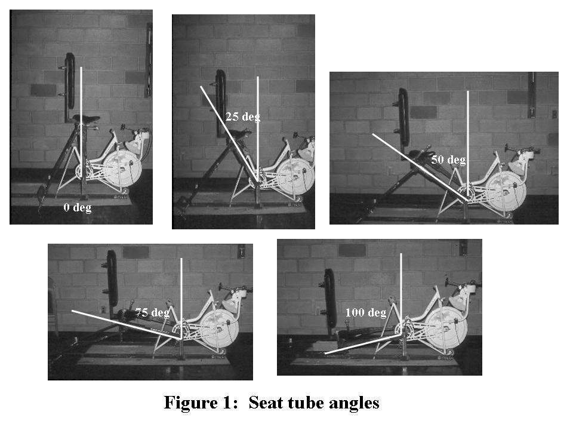
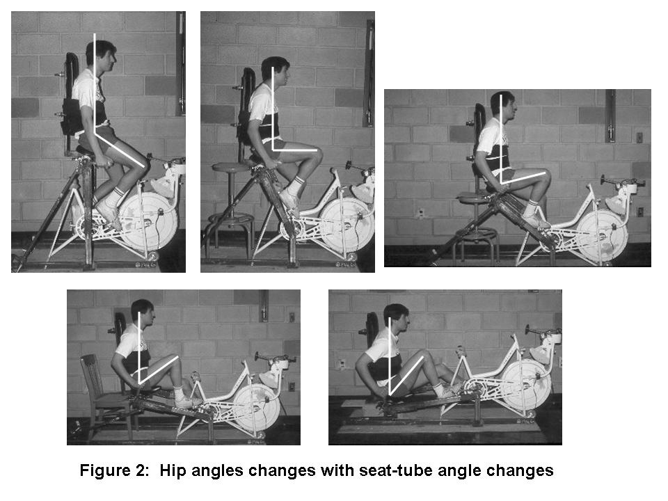
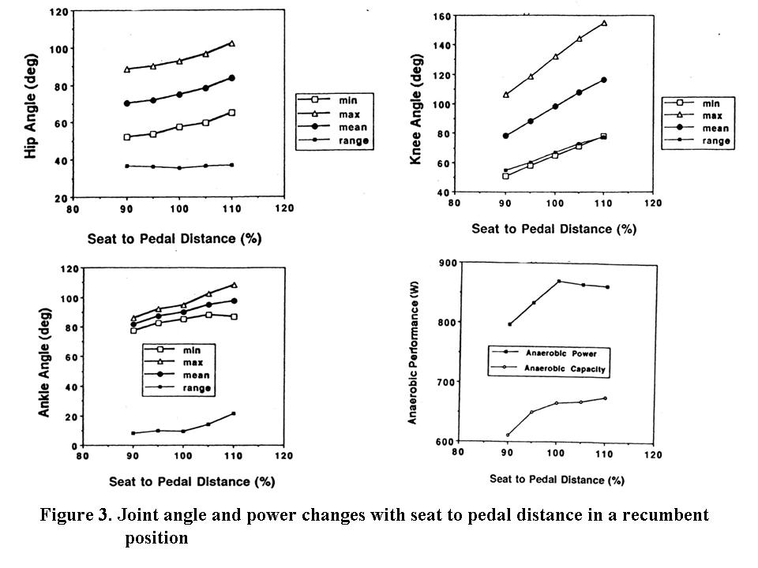
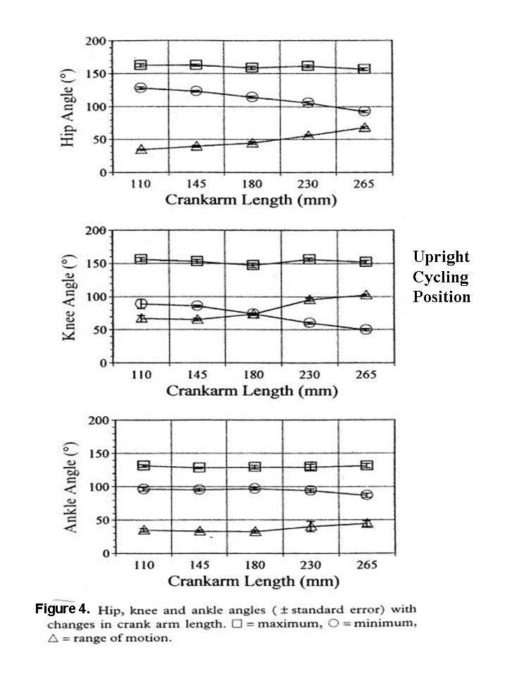
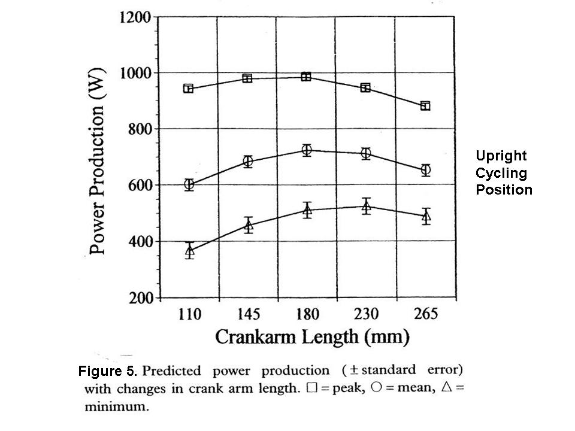
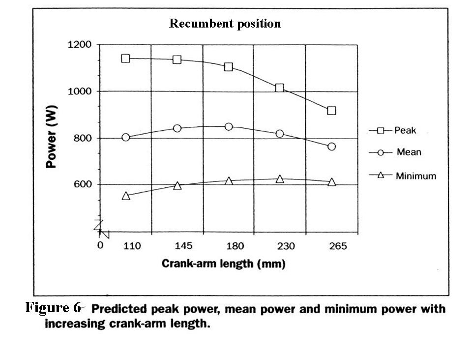

Contents | About | Contact
article 16, issue 05
Maximizing Performance in Human Powered Vehicles: A literature review and directions for future researchDanny Too and Gerald E. Landwer
June 21, 2008Abstract
If the limits of performance in human powered vehicles (HPV) are to be reached, designers of HPVs need to understand how the body interacts with the vehicle to maximize propulsive forces, and how the vehicle interacts with the environment to minimize resistive forces. This paper will review, compare and summarize the various research literature on both upright and recumbent cycling positions regarding how systematic changes in external mechanical variables (seat-tube-angle, seat-to-pedal distance, crank arm length) interact with internal biomechanical factors (hip, knee, and ankle angles) to affect power production and cycling performance. Conclusions for future research will also be also presented.
Introduction
In order to maximize performance in HPVs, designers need to understand not only how to minimize friction and drag, but also how to maximize power production and propulsive forces. A biomechanical model describing the factors affecting HPV performance was presented (Too & Landwer, 2003). This model included a flowchart of the:
From the model, it was determined that the forces, torque, and power produced to propel HPVs are a function of how internal biomechanical factors (muscle length with different hip, knee, and ankle angles) interact with external mechanical factors (seat-tube-angle, seat-to-pedal distance, crank arm length).
- factors affecting cycling performance;
- environmental factors contributing to resistive forces, and
- internal biomechanical factors affecting power and torque production.
The interaction of these internal biomechanical factors with external mechanical factors was discussed. (Too and Landwer (2003-2004)). This included a review of muscle force-length-velocity-power relationships; how muscle force is produced and modified with changes in joint angles (due to changes in muscle length); and how changes in seat-tube-angle, seat-to-pedal distance, and crank arm length affect joint angles and power production, by changing where, when, and for how long the muscles are active in the force-length-velocity curve during a pedal cycle.
This paper will review, compare and summarize various published research on both upright and recumbent cycling positions, incorporating and expanding upon the previous information. This will include a discussion of the interaction between changes in muscle length and force production affecting cycling performance due to changes in:
This will also include a discussion of:
- hip angle with changes in seat-tube angle;
- hip, knee, and ankle angles with changes in seat-to-pedal distance; and
- hip, knee, and ankle angles with different crank arm lengths.
- the interaction between crank arm length, load/resistance, pedaling rate, and work/power output; and
- potential topics and direction for future HPV research in this area.
[Editor's note: This paper offers a great deal of information on human performance with different cycle geometries and positions as parameters. Of particular interest are the differences in recumbent and upright positions.]
Seat-Tube-Angle, Hip-Angle, and Cycling Performance
Based on the force-length relationship, a muscle can produce its greatest force at its resting length. With increasing or decreasing distance from resting length, the force a muscle can produce will decrease. To determine the hip angles (minimum, maximum, range) during a pedal cycle that would optimize muscle length to maximize force production (as determined by cycling performance), Too (1990, 1991) examined the effect of a systematic change in seat-tube angle on hip angle and cycling performance when other variables were controlled (i.e., the trunk/seat backrest kept perpendicular to the ground, and the seat-to-pedal distance maintained at 100% of leg length as measured from the greater trochanter to the ground). With a systematic increase in seat-tube angle from 0 to 100 degrees (see Figure 1), there was a systematic decrease in hip angle (see Figure 2). It was determined that cycling performance (aerobically and anaerobically) was maximized in the 75 degree seat-tube-angle, with the following hip-angles during a pedal cycle (minimum = 55 degrees, maximum = 97 degrees, range = 42 degrees). The accompanying knee angles for the aforementioned hip angles were: minimum = 65 degrees, maximum = 142 degrees, range = 77 degrees. It should be noted that these hip and knee angles are values combined from the angles reported in the aerobic (Too, 1990) and anaerobic study (Too, 1991). An inverted U shape curve was found to best describing cycling performance when there is a systematic increase in seat-tube angle (from 0 to 100 degrees) resulting in a systematic decrease in mean hip angle (from 131 to 59 degrees). To determine or predict the optimal seat-tube angle and hip angles (minimum, maximum, range) to maximize cycling performance in a recumbent position, regression analysis would be required (but was not undertaken by Too, 1990, 1991), and is certainly a topic for additional HPV research.
If a HPV is to be designed to incorporate these angles (seat-tube, hip, and knee), the hip position should be located above the crank spindle (i.e. – bottom bracket) because Too (1989, 1994) reported cycling performance, both aerobically and anaerobically, to decrease when the hip position was located below the crank spindle. It had been speculated that this decrement in performance may be attributed to: (1) an additional unmeasured energy requirement related to the extra force required to overcome a greater portion of the weight of the lower extremity during a pedal cycle (Too, 1994); (2) a decreased body/leg weight contribution to the total pedal force applied (Too, 1994); (3) changes in muscular forces/torques developed and applied to the pedals (Too, 1994); (4) a change in trunk angle relative to the ground (if the same hip and knee angles were to be maintained); (5) the use of pedal toe-clips instead of some other foot-to-pedal interface (Reiser & Peterson, 1998-1999).
seat-to-pedal distance, Joint Angles, and Cycling Performance
Unlike changes in seat-tube-angle where only the hip-angle is affected, changes in seat-to-pedal distance will affect angles of the hip, knee, and ankle during a pedal cycle. Based on the force-length-relationship, a more complex interaction occurs between muscle length and force production when multiple joints and multi-joint muscles that cross the hip/knee and knee/ankle (e.g., rectus femoris, hamstrings, gastrocnemius) are involved. From the literature, it appears that with a traditional upright cycling position, the seat height (as measured from the pedal spindle to the top of the seat along a straight line formed by the crank, seat tube, and seat post) that maximizes aerobic cycling performance varies from 96% to 100% of trochanteric leg length (Borysewicz, 1985; Hull and Gonzalez, 1990; Nordeen-Snyder, 1977; Shennum & deVries, 1976). On the other hand, Thomas (1967) reported the optimal seat height for anaerobic high intensity work of short duration in the upright cycling position to be 109% of the leg from the floor to the symphysis pubis. Because joint angles were not reported in the literature for these investigations, it is unknown as to what hip, knee, and ankle angles will maximize cycling performance in upright cycling positions, or how joint angles will change with different seat height. It can be speculated that if the initial seat height was set at 100% of trochanteric leg length, a systematic decrease in seat height would result in a systematic decrease in the minimum and maximum joint angles of the hip and knee, whereas the joint angle range of motion of the hip and knee would remain the same. On the other hand, if the seat height was increased from 100% trochanteric leg length, it can be speculated that accommodations would have to be made at the ankle, with greater ankle extension during a pedal cycle.
For a recumbent position (i.e., a 75 degree seat-tube-angle and a backrest perpendicular to the ground), Too (1993a, 1993b) did measure joint angles when the effect of five seat-to-pedal distance (90, 95, 100, 105, and 110% of trochanteric leg length) on peak and mean power production were examined. Too (1993b) reported that with a systematic increase (5% increment) in seat-to-pedal distance from 90–110% of trochanteric leg length: (1) the minimum and maximum hip angle during a pedal cycle increased while the range did not change; (2) the minimum, maximum, and range of knee angles increased; (3) the minimum ankle angle increased, the maximum ankle angle increased until 105% of leg length and then decreased, whereas the range of ankle angles remained fairly similar from 90-100% of leg length and then increased with increasing seat-to-pedal distance; (4) peak power increased from 90-100% leg length and then decreased with increasing leg length (although no significant differences were found between the 100, 105, and 110% leg length conditions); and (5) mean power increased (although no significant differences were found between the 100, 105, and 110% leg length) (see Figure 3).
This reveals that in a recumbent position, with a systematic increase in seat-to-pedal distance from 90-110% of trochanteric leg length, the minimum, maximum, and range of joint angles of the hip, knee, and ankle do not change the same way to affect peak and mean power production. Part of the reason for this may be the use of seat-to-pedal distance increments as a percentage of leg length, as opposed to a fixed or absolute value. For example, a 5% increase (based on leg length) in seat-to-pedal distance for a tall individual (with long legs) will result in a significantly greater absolute change in seat-to-pedal distance when compared to a very short individual. In fact, some tall individuals were unable to complete all 5 seat-to-pedal distance conditions because they were unable to pedal in the 110% leg length condition. They were already at full knee extension and no further accommodation at the ankle could be made when seat-to-pedal distance was further increased. In addition, some individuals appeared to make adjustments in their seating positions during the test in order to perform at the 110% leg length condition. This may have affected the accuracy and validity of some of the joint angle measurements, and would help explain why joint angles (and power production) changed the way they did (Too, 1993a,b).
An alternative investigation to determine how changes in seat-to-pedal distance would affect joint angles would be to manipulate seat-to-pedal distance based on an absolute or fixed value (e.g., 35 mm increment for each seat-to-pedal distance). However, the same concerns over differences in leg length between very tall individuals and very short individuals would have to be addressed. A 35 mm increment in seat-to-pedal distance would be a greater percentage of the leg length of a very short individual and would result in a greater change in joint angles during a pedal cycle than when compared to a very tall individual. Since it is not the actual/absolute seat-to-pedal distance that is important (or the percentage of leg length that is important), but rather the joint angles that result in the most effective interaction between muscle length and force production, a better alternative would be to manipulate seat-to-pedal distance based on a systematic change in joint angles (but record the seat-to-pedal distance as an absolute distance and as a percentage of leg length) to determine the seat-to-pedal distance that would result in the most effective joint angles to maximize power production and cycling performance. Once the most effective hip, knee, and ankle angles to maximize cycling performance are known, then individual adjustments to seat-to-peal distance can be made to reproduce these joint angles.
Future research in this area of HPV could include an investigation to determine whether the same trend in cycling performance (and in joint angle changes) with increasing seat-to-pedal distance in a recumbent position would be found if a maximal aerobic test was used instead of an anaerobic power test. Based on force-length relationships, it may be speculated that similar trends would be found for a maximal aerobic test. However, when force-velocity relationships are considered, this may not be the case due to a possible interaction between load and pedaling rate. Because velocity (pedaling rate) is generally fixed while force (load) continually increases in an aerobic cycling test, and load is generally fixed while pedaling rate continually varies (and decreases with fatigue) in a maximal anaerobic power test, this suggests an interaction between load and pedaling rate (based on the force-velocity curve).
Since joint angles have not been reported in studies where seat height was manipulated in an upright position, additional areas of research could include investigations as to how joint angles (hip, knee, and ankle) and cycling performance (aerobically and anaerobically) change with changes in seat height, and whether trends found are similar to those in a recumbent position. In fact it would be interesting to compare cycling performance, joint angles changes, and trends between the upright and recumbent position with different seat-to-pedal distances, both aerobically and anaerobically. This information would provide a great deal of insight regarding how various muscle groups of the hip, knee, and ankle interact with different joint angles, (as a result of different seat-to-pedal distance and cycling position combinations) to produce force. This would help explain why cycling performance is different when different cycling positions (i.e., recumbent or upright) are combined with different seat-to-pedal distances.
Crank Arm Length, Joint Angles, and Cycling Performance
Changes in crank arm length, similar to changes in seat-to-pedal distance, will affect both hip and knee angles. However, the effect on the minimum, maximum, and joint angle range on the hip and knee will be different. In an upright cycling position with a fixed crank arm length (where the seat-to-pedal distance selected is already at the maximum distance that can be pedaled in), seat height can then only be manipulated to result in a decrease in seat-to-pedal distance. A decrement in seat height (seat-to-pedal distance) will result in a decrement in minimum and maximum hip and knee angles during a pedal cycle, with the joint angle ranges remaining the same. Cycling performance would be maximized with a joint angle range (minimum and maximum hip and knee angles) where contraction of the muscles occur in the most effective portion of the force-length curve (i.e., resting length). This apparently varies somewhere between 96-100% of trochanteric length for aerobic work (Borysewicz, 1985; Hull and Gonzalez, 1990; Nordeen-Snyder, 1977; Shennum & deVries, 1976) and 109% of the medial aspect of the inside leg from the floor to the symphysis pubis for anaerobic work (Thomas, 1967).
On the other hand, if the same maximum seat-to-pedal distance is used, but the crank arm length is free to vary, then the crank arm length (unlike seat height) can be increased or decreased. However, any changes in crank arm length must then be accompanied by a corresponding but opposite change in seat height if the same seat-to-pedal distance is to be maintained (i.e., if the crank arm length was to be increased, then the seat height must be decreased by the same amount to maintain the same seat-to-pedal distance). With changes in crank arm length, the maximum hip and knee angle in a pedal cycle would also remain the same (with the same seat-to-pedal distance). But, the minimum hip and knee angle would decrease with an increment in crank arm length, while the hip and knee range of motion would increase (Too & Landwer, 2000) (see Figure 4). The reverse would be true if the crank arm length was to be decreased (i.e., the minimum hip and knee angle would increase, whereas the hip and knee range of motion would decrease). Based on the force-length relationship, this would mean that differences in cycling performance with different crank arm lengths (using the same seat-to-pedal distance) would be attributed to muscle contraction of the hip and knee occurring over greater or lesser portions of the force-length curve during a pedal cycle (i.e., greater portion with longer crank arm lengths, and smaller portion with shorter crank arm lengths). This could explain why certain crank arm lengths are more effective than other crank arm lengths in an upright and/or recumbent position.
However, if the hip angle was manipulated due to changes in seat-tube angle (to result in a recumbent position), then performance differences between an upright and recumbent position with different crank arm lengths may be attributed to, not just muscle contractions of the hip and knee occurring over greater (or lesser or equal) portion of the force-length curve during a pedal cycle, but to different parts of it as well. This would result in more (or less) effective force-length interactions and provide explanations regarding why some cycling positions (i.e., recumbent) are more effective and efficient than others (i.e., upright). For example, with the same crank arm length, muscle contraction in the recumbent position may occur over an equal but different (and more effective) portion of the force-length curve to produce force when compared to an upright position. On the other hand, with a different crank arm length (i.e., shorter crank arm), muscle contraction in the recumbent position may occur over an unequal (i.e., smaller) and different portion of the force-length curve that might even be more effective in producing force when compared to an upright position where a longer crank arm is used (as observed by an increase in cycling performance). This appears to be supported by a comparison of maximal cycling duration between a recumbent position (Too & Landwer, 1998) and an upright position (Too & Landwer, 1999) when different crank arm lengths are used in an aerobic test.
In a recumbent cycling position (i.e., a 75 degree seat-tube angle and a backrest perpendicular to the ground, and seat-to-pedal distance adjusted to 100% of the total leg length, as measured from the right greater trochanter to the ground), an inverted U-curve was found to best describe the trend in cycling duration for a maximal aerobic test with incrementing crank arm length (i.e., 110, 145, 180, 230, 265 mm) (Too & Landwer, 1998). The longest cycling duration in the recumbent position was found with the 145 mm crank arm length (mean time = 737 seconds) and with joint angles for one pedal cycle as follows: hip (minimum = 69 degrees, maximum = 102 degrees, range = 33 degrees); knee (minimum = 85 degrees, maximum = 142 degrees, range = 57 degrees); ankle (minimum = 89 degrees, maximum = 100 degrees, range = 11 degrees) (Too & Landwer, 1998). When the cycling duration in the recumbent position of this study (mean time = 737 seconds) is compared to the cycling duration in an upright position with the same 145 mm crank arm length (mean time = 541 seconds) (Too & Landwer, 1999), quite a contrast can be observed (with the cycling duration in the upright position being only 73.4% of that in the recumbent position). The joint angles in the upright position with the 145 mm crank arm length were reported to be: hip (minimum = 103 degrees, maximum = 136 degrees, range = 33 degrees); knee (minimum = 80 degrees, maximum = 135 degrees, range = 55 degrees); ankle (minimum = 90 degrees, maximum = 110 degrees, range = 20 degrees) (Too & Landwer, 1999). When the joint angles between the recumbent and upright position are compared over one pedal cycle, the minimum hip angle can be observed to be distinctly different (60 degrees for the recumbent position; 103 degrees for the upright position), as well as the maximum hip angle (102 degrees for the recumbent position; 136 degrees for the upright position). Since the hip range of motion in the recumbent and upright position was the same (33 degrees) while the minimum and maximum hip angles were different, this would suggest that muscle contraction of the hip in the recumbent and upright position occurred over an equal but different portion of the force-length curve, with contraction in the recumbent position occurring in an more effective part of that curve.
With changes in crank arm length (110, 145, 180, 230, 265 mm) in the upright position, the longest cycling duration (mean time = 565 seconds) was reported to occur with the 230 mm crank arm length and not with the 145 mm crank arm length (mean time = 541 seconds) (Too & Landwer, 1999). This would suggest that in the upright cycling position, increasing crank arm lengths from 110 mm to 230 mm not only resulted in greater hip and knee angle ranges of motion (and smaller minimum hip and knee angles), but also resulted in muscle contraction over a greater (and probably more effective) portion of the force-length curve. As the crank arm length increased from 230 mm to 265 mm, the continued decrease in minimum hip and knee angle result in muscle contraction to be initiated from the force-length curve where the muscles are in an elongated position, and therefore, not in an effective length to produce force, resulting in a decreased cycling duration.
Since the longest cycling duration in the upright position found with the 230 mm crank arm length (mean time = 565 seconds) is greater than the cycling duration with the 145 mm crank arm in the upright position (mean time = 541 seconds) (Too & Landwer, 1999), but less than the longest cycling duration in the recumbent position with the 145 mm crank arm length (mean time = 737 seconds) (Too & Landwer, 1998), this would suggest that: (1) in an upright position, muscle contraction of the hip and knee occurred over a greater and more effective portion of the force-length curve (during a pedal cycle) with the 230 mm crank arm than when compared to the 145 mm crank arm length; and (2) in a recumbent position with a 145 mm crank arm, muscle contraction of the hip and knee occurred over a smaller and different, but more effective portion of the force/tension-length curve during a pedal cycle, when compared to the crank arm length (230 mm) that maximized cycling duration in the upright position. This would also suggest that increased cycling duration in the recumbent position with the 145 mm crank arm length may be attributed to not just greater force production in this portion of the force-length curve, but also to less fatigue. (It should be noted that the joint angles obtained during a pedal cycle with different combination of crank arm lengths and cycling positions can result in an overlap where muscle contractions occur in the force-length curve).
Interaction of Crank Arm Length and Seat-to-Pedal Distance to Affect Joint Angles and Cycling Performance
The results and trends in cycling performance (as reflected by peak power production) found with incrementing crank arm lengths in the upright and recumbent position when anaerobic power tests were used, were similar to those found with aerobic tests by Too and Landwer (1998, 1999). An inverted U-curve determined from regression equations was reported to best describe the trend in peak power with incrementing crank arm length in an upright position (see Figure 5) (Too & Landwer, 2000) and in a recumbent position (see Figure 6) (Too & Williams, 2000). Similar to the aerobic study (where the longest cycling duration in the recumbent position was found with the 145 mm crank arm length), the largest peak power was also produced (1144 W) in a recumbent position with the 145 mm crank arm length when an anaerobic test was used (Too & Williams, 2000). Although joint angles were not reported by Too and Williams (2000), a post-hoc examination and comparison of the joint angles with the 145 mm crank arm revealed it to be very similar to the joint angles found for the same recumbent position and 145 mm crank arm length in the aerobic study by Too and Landwer (1998). The mean joint angles (calculated from the aerobic and anaerobic study) with the 145 mm crank arm length that maximized cycling performance (peak power and cycling duration) in a recumbent position during a pedal cycle are as follows: hip angles (minimum = 66 degrees, maximum = 99 degrees, range = 33 degrees), knee angles (minimum = 83 degrees, maximum = 138 degrees, range = 55 degrees), and ankle angles (minimum = 92.5 degrees, maximum = 103.5 degrees, range = 11degrees). This again, would suggest that muscle contraction of the hip and knee for an anaerobic test occurred over a more effective portion of the force/tension-length curve during a pedal cycle with the 145 mm crank arm length than when compared to the other crank arm lengths.
However, unlike the aerobic study (Too & Landwer, 1999) where cycling duration was maximized in the upright position with a 230 mm crank arm length, the largest peak power in the upright position with an anaerobic test was found with the 180 mm crank arm length (Too & Landwer, 2000). This dissimilarity may be due to the use of a greater seat height (109% of leg length as measured from the ground to the symphysis pubis) in the anaerobic power test when compared to the lower seat height (100% of leg length as measured from the floor to the greater trochanter) that was used in the aerobic test. (Note: in the recumbent position the same seat-to-pedal distance was used for both the aerobic and anaerobic study). This is supported by the larger minimum hip and knee angles, and larger maximum joint angle and range of motion of the hip, knee, and ankle in all crank arm length conditions of the anaerobic study when compared to the aerobic study (Too & Landwer, 1999, 2000). This result and trend in joint angles with an increase in seat height in the upright position is similar to that found with incrementing seat-to-pedal distance with a fixed crank arm length in a recumbent position (Too, 1993a, 1993b).
Different seat heights were selected and used for the aerobic (Too & Landwer, 1999) and anaerobic (Too & Landwer, 2000) studies because these were the seat-to-pedal distances reported in the literature to maximize aerobic (Shennum & deVries, 1976) and anaerobic (Thomas, 1967) cycling performance in an upright position. These two different seat heights (with different hip, knee, and ankle angles), interacting with different crank arm lengths, resulted in the 180 and 230 mm crank arm lengths to maximize anaerobic and aerobic cycling performance, respectively. Based on force-length relationships, the important criteria to consider should be the joint angles of the hip, knee, and ankle (minimum, maximum, range of motion) to maximize force production with changing muscle length, and not the actual seat height or crank arm length. Therefore, regardless of different seat height and crank arm length combinations, the optimum joint angles to maximize cycling performance aerobically and anaerobically in the upright position should be fairly similar (such as the joint angles observed for the aerobic and anaerobic tests in the recumbent position). But this was not the case. The difference in seat height between the aerobic and anaerobic test in the upright position resulted in different joint angles over a pedal cycle when the same crank arm length (i.e., 180 or 230 mm) was used and compared.
Based on the results of the aerobic study (Too & Landwer, 1999) and anaerobic study (Too & Landwer, 2000) in the upright position, it appears the most effective joint angles to maximize cycling performance are found: (1) with a 180 mm crank arm length using a higher seat height (i.e., 109% of leg length measured from the ground to the symphysis pubis) for anaerobic performance; and (2) with a 230 mm crank arm length using a lower seat height (100% of leg length measured from the ground to the greater trochanter) for aerobic performance. A comparison of the joint angles (minimum, maximum, range of motion) of the hip, knee, and ankle between the 180 mm crank arm (with greater seat height) and the 230 mm crank (with lower seat height) reveal the joint angles to be dissimilar. Minimum joint angles were smaller with the longer crank arm (230 mm) and lower seat height, whereas maximum joint angles were larger with the shorter crank arm (180 mm) and greater seat height. This is consistent with what would be expected with a systematic increase in seat height or crank arm length. With any given seat height, an increase in crank arm length (while maintaining the same seat height) would result in smaller minimum and maximum hip and knee angles, whereas with any given crank arm length, an increase in seat height (assuming the maximum seat height that can be pedaled in has not been reached) will result in larger minimum and maximum hip and knee angles. In other words, a longer crank arm length (i.e., 230 mm) would be expected to result in smaller minimum joint angles over a pedal cycle, whereas a greater seat height would be expected to allow the hip, knee, and ankle to extend further during a pedal cycle and result in greater maximum joint angles. In addition, the range of motion of the hip and knee using the 230 mm crank arm with a lower seat height was greater than that of the 180 mm crank arm with a greater seat height, and this is also consistent with the expectation for a longer crank arm. On the other hand, the ankle range of motion was greater using the 180 crank arm length with a greater seat height then when compared to the ankle range of motion using the 230 mm crank arm length with a lower seat height. This was unexpected, but logical since a seat height greater than leg length would require greater extension of the ankle while pedaling, resulting in a greater ankle range of motion over a pedal cycle (than when compared to a lower seat height).
Since the joint angles (minimum, maximum, range of motion) between the two upright cycling positions (aerobic test using a 230 mm crank arm with a lower seat height, and an anaerobic test using a 180 mm crank arm with a greater seat height) are dissimilar, this would suggest that muscle contraction in the two upright positions occur over different and unequal portions of the force-length curve. When compared to the 230 mm crank arm length, muscle contraction of the hip and knee for the 180 mm crank arm appear to occur over a smaller portion of the force-length curve due to the smaller range of motion, while contraction of the muscles of the ankle appear to occur over a greater portion of the force-length curve due to a greater range of motion (from greater ankle extension with a greater seat height). On the other hand, the opposite would be true for the 230 mm crank arm length when compared to the 180 mm crank arm length (i.e., muscle contraction of the hip and knee for the 230 mm crank arm would occur over a larger portion of the force-length curve due to the greater range of motion, while contraction of the muscles of the ankle would occur over a smaller portion of the force-length curve due to a smaller range of motion as a result of less ankle extension from a lower seat height). Since minimum and maximum joint angles of the 180 mm crank arm length (anaerobic test with a greater seat height) and 230 mm crank arm length (aerobic test with a lower seat height) in the upright position were different, muscle contraction with the two different crank arm length would occur over different parts of the force-length curve (with some overlap).
The muscle length (represented by minimum and maximum joint angles) in the recumbent position with the 145 mm crank arm length that maximized cycling performance aerobically and anaerobically, can be used to create a reference frame or model on the force-length curve (to represent maximal cycling performance). Muscle lengths, based on joint angles obtained from different combinations of crank arm lengths and seat-to-pedal distance can then be compared to this model. If muscle length (based on joint angles) with the180 mm crank arm (anaerobic test with a greater seat height) was compared on this force-length curve reference frame to the 230 mm crank arm (aerobic test with a lower seat height), the following would be found: (1) muscle length of the hip for the 230 mm crank arm would occur in a more effective portion of the force-length curve when compared to the 180 mm crank arm; (2) muscle length of the knee for the 180 mm crank arm would occur in a more effective portion of the force-length curve when compared to the 230 mm crank arm; and (3) greater extension of the ankle in the 180 mm crank arm (due to the greater seat height) may result in a more effective muscle length of the ankle extensors to affect cycling performance when compared to the 230 mm crank arm (and/or when compared to the 145 mm crank arm in the recumbent position). This may explain why and how two different crank arm lengths with two different seat heights, resulting in different joint angles and muscle lengths could both maximize cycling performance in the upright position. The joint angle and muscle length of the hip is more effective with the 230 mm crank arm length (with a shorter seat height), whereas the joint angle and muscle length of the knee is more effective with the 180 mm crank arm length (with a greater seat height), and a greater seat height (regardless of crank arm length) may allow a greater contribution of the ankle extensors to force production.
The results of different crank arm lengths maximizing performance in the upright position with different seat heights suggest an interaction between crank arm length and seat height (i.e., seat-to-pedal distance in the recumbent position) to affect joint angles and cycling performance. To investigate these interactions would require a series of studies where the seat-to-pedal distance is systematically manipulated with different crank arm lengths. The effect on joint angles and cycling performance, aerobically and anaerobically, in the upright and recumbent position could then be compared. This would provide additional information and insights regarding how seat-to-pedal distance and crank arm length interact to affect joint angles, and how to maximize cycling performance.
Crank Arm Length, Load/Resistance, Pedaling Rate, and Power Production
In a maximal aerobic test, pedaling cadence is generally controlled (i.e., fixed) while the load is varied and continually increased until the pedaling rate can no longer be maintained. At this point the test is terminated. Cycling performance is then determined based on work output (as a function of load and cadence) and/or cycling duration. On the other hand, in a maximal anaerobic test such as the Wingate power test, the load is fixed (i.e., selected based on body mass), and the pedaling rate is free to vary, with the goal to pedal as many pedal revolutions as possible in a given time interval (i.e., 30 seconds for a Wingate power test). Peak power is then determined based on the largest number of pedal revolutions in any 5 second interval (relative peak power) or largest power output in any 5 second interval based on a combination of load and pedal revolutions (absolute peak power). Mean power is determined from the average number of pedal revolution during the total test interval. Since pedaling rate is generally fixed while load is varied (and continually increased) in an aerobic test, and if load is fixed while pedaling rate is varied (i.e., decreasing with time and fatigue as the test progresses) in an anaerobic test, this suggests that some interaction exists between load (force) and pedaling rate (velocity) to affect cycling performance. This interaction between pedaling rate, load, and power output appear to be supported by Seabury, Adams, and Ramey (1977).
The addition and use of different crank arm lengths would increase the complexity of this interaction by affecting torque production and pedaling rate. For example, a longer crank arm length in an aerobic test with a fixed pedaling rate would result in a greater torque to be applied to the pedals (allowing a greater load/resistance to be overcome), whereas a shorter crank arm length in an anaerobic test with a fixed load would allow a greater number of pedal revolution to be completed (resulting in greater power production). This interaction between load, pedaling rate, and crank arm length to affect force/toque, power/work output, and cycling performance would require an examination of not just the force-length relationship, but the force-velocity- power relationship as well.
Since the goal of the Wingate anaerobic power test is to maximize peak power and mean power over a 30 second interval (by pedaling as many revolutions as possible with a fixed load based on body mass), a shorter crank arm would be more advantageous to achieve a higher number of pedal revolutions (and greater peak power). However, if the load was increased, and continually increased for repeated tests, a resistance will eventually be reached where (based on the force-velocity-power curve) pedaling rate (velocity) would decrease. At this point, a longer crank arm would be more effective in maximizing power production by allowing the pedaling rate to be maintained with the greater load. Similarly, in an aerobic cycling test where a low fixed pedaling cadence (e.g., 50 rpm) is used (instead of a fixed load), a longer crank arm would be more effective in maintaining the cadence as the load increased (since a longer crank arm would allow a greater torque to be applied to the pedals with the same force). Conversely, if a high fixed pedaling rate (e.g., 100 rpm) is selected for an aerobic test, a long crank arm would not be very effective in minimizing energy cost when there is no load (or with a minimal load at the beginning of the test). With minimal load and a high fixed pedaling rate, it would be more advantageous to use a shorter crank arm length. However, as the aerobic test progresses and the load continually increased, a resistance will be reached where the cadence cannot be maintained with a short crank arm (because insufficient torque is produced to move the pedals). At this point, a longer crank arm would be required to pedal at the required cadence, and work/power output would increase as the load is further increased. In summary, in a maximal aerobic test where the load is continually increased until the cadence can no longer be maintained, low fixed pedaling rates would favor the use of longer crank arms, whereas high fixed pedaling rates would favor the use of shorter crank arms. On the other hand, in a maximal anaerobic power test (i.e., Wingate power test), the use of very high fixed loads would favor longer crank arms to maximize power production, and very low fixed loads would favor shorter crank arms. This interaction between load (force), pedaling rate (velocity), and crank arm length (joint angles and muscle length) to maximize power production in an anaerobic task, or to maximize work/power output in an aerobic task is consistent with what has been reported in the literature regarding the interaction between load, pedaling rate, and power output.
According to Seabury et al. (1977), with a standard crank arm length: (1) there is a most efficient pedaling rate for each power output; (2) the most efficient pedaling rate increases with power output; (3) the increase in energy expenditure when pedaling slower than optimal is greater at high power outputs than at low power outputs; and (4) the increase in energy expenditure when pedaling faster than optimal is greater at low power outputs than at high power outputs. Therefore, with the inclusion of crank arm length as a variable, it can be expected that: (1) an optimal pedaling rate and load exists to maximize work output for different crank arm lengths in an aerobic test; and (2) an optimal load exists to maximize power production (peak power and mean power) for different crank arm lengths in an anaerobic test (such as the Wingate power test).
An optimal load that can maximize power production for different crank arm lengths in an anaerobic test is supported by Too, Williams, Wakayama, and Landwer (2000). Power production in a recumbent cycling position was examined with three crank arm lengths (110, 180, 250 mm) and seven load conditions (75, 90, 105, 120, 135, 150, 165 gm/kg of body mass) using a Wingate anaerobic power test. It was determined that peak power production for the 110, 180, and 250 mm crank arm length occurred with a load of 90, 105, and 120 gm/kg BM, respectively (Too et al., 2000). In other words, with increasing loads, the optimal crank arm length to maximize power production also increased, and is consistent with what is expected based on force-velocity-power relationships. If the crank arm length was not increased with increasing loads, a resistance would be reached where the pedaling rate would have to decrease. It should be noted that females were used in the study by Too et al. (2000), and the optimal load for maximizing peak power in the different crank arm length conditions might not be the same for males, or for an upright cycling position (and topics for additional research in this area).
The loads that maximized power production for different crank arm lengths in a recumbent position when an anaerobic power test was used may not necessarily be the same for an upright cycling position. The greater power production found in a recumbent position (Too & Williams, 2000) when compared to an upright one (Too & Landwer, 2000) would suggest a more effective force-length interaction in the recumbent position. This more effective force-length interaction (between muscle length and joint angle to produce force) in turn, would suggest that the optimal load to maximize power production in the recumbent position would not be the same, but would have to be greater than that in an upright position for any given crank arm length. This appears to be supported when the results of these two studies (Too & Landwer, 2000; Too & Williams, 2000) are compared. Both studies (one using an upright position, and the other using a recumbent position) examined peak power production for 5 crank arm lengths (110, 145, 180, 230, 265 mm) when a load of 85 gm/kg of body mass was used.
In the upright position, Too and Landwer (2000) reported the largest peak power (968 W) to occur with the 180 mm crank arm length, and with a decreasing trend in peak power with increasing and decreasing crank arm length (from the 180 mm crank arm length). This was supported by regression equations to predict power production with changes in crank arm length (Too & Landwer, 2000) (see Figure 5). This would suggest that if the load was increased, the largest peak power produced would occur with a longer crank arm length, and if the load was decreased, the largest peak power would be found with a shorter crank arm length.
On the other hand, in a recumbent position, based on regression analysis of peak power production (from Wingate power tests using the same load of 85 gm/kg of body mass as in the upright study) with 5 crank arm lengths, Too and Williams (2000) predicted that the largest peak power would be found with the shortest crank arm length (110 mm), and a descending trend in peak power with increasing crank arm length (see Figure 6). However, the results of the actual data collected revealed that peak power was found with the 145 mm crank arm (1144 W) and not with the 110 mm crank arm (1139 W), with no significant differences between the two crank arm lengths. (Note: this peak power of 1144 W in the recumbent position with the 145 mm crank arm length is much greater than the largest peak power of 968 W reported in the upright position with the 180 mm crank arm length). This would suggest that the maximal load (85 gm/kg of body mass) to maximize peak power had been found for the shortest crank arm length (110 mm) and that any further increase in load would result in a greater decrement in peak power for the 110 mm crank arm length, but would result in an increase in peak power with the longer crank arms (if the maximal pedaling rates could be maintained).
Although there is no literature available regarding what is the most effective pedaling rate to maximize work/power output in a recumbent (or upright) position using an aerobic test with increasing load for different crank arm lengths, it can be assumed that based on the force-length-velocity-power curve, an optimal pedaling rate exists for different crank arm lengths. However, whether the optimal pedaling rates will be same for different crank arm lengths in the upright and recumbent position is unknown, and would be just one of many topics and directions for future research in this area.
Conclusions
Based on the force-length-velocity-power curve and the complex interaction of muscle length, joint angles, and force/torque/power production with load, pedaling rate, seat-to-pedal distance and crank arm length, one obvious area for future research involving human powered vehicles is to investigate these interactions. Currently, it is unknown as to what is/are the optimal load(s) and pedaling rate(s) for different crank arm lengths and seat-to-pedal distances to maximize power output and performance in speed and/or endurance events. With different crank arm lengths and seat-to-pedal distances, what is/are the optimal load(s) and cadence(s) to maximize work and power output while minimizing energy expenditure? What is the optimal crank arm length, seat-to-pedal distance, pedaling rate, and load (based on different leg lengths, and proportion of thigh to lower leg length) to maximize cycling duration and performance? Is there one optimal crank arm length, seat-to-pedal distance, load and pedaling rate to maximize power output and performance (based on optimum hip, knee, and ankle angles) for an anaerobic event (e.g., 200 meter sprint) and/or an aerobic/distance event (e.g., 100 km, 1, 6, 12, 24 hour records)? Answers to these questions become important if new speed, time and distance records are to be set for HPV competitions. Of course, these same questions can be asked and applied for investigations involving more traditional upright cycling positions.
Based on the literature published, other potential topics related to this area of HPV research include: (1) examining the interactions between changes in trunk angle/orientation and seat tube angle on joint angles and cycling performance; (2) generating regression equations to determine the crank arm length, seat tube angle, seat-to-pedal distance and joint angles that would maximize cycling performance, both aerobically and anaerobically, in an upright and recumbent position; and (3) comparing cycling performance (and determining whether any interactions exists) between upright and recumbent positions with changes in crank arm length, seat to pedal distance, load, and/or pedaling cadence.
Novel areas of research could include how the leg length ratio between the thigh and lower leg affect hip, knee and ankle angles over a pedal cycle with different crank arm lengths and seat to pedal distances. The ratio between the thigh and lower leg could be 50/50 or the thigh could be longer or shorter than the lower leg. Individuals of the same height (or different heights) could have: (1) the same leg length, (2) different leg lengths, (3) same leg length but different leg length ratios; (4) different leg lengths but the same leg length ratio; or (5) different leg lengths and different leg length ratios. It would be interesting to compare (or examine and compare groups of) individuals of different heights, leg length and/or leg length proportions to determine if similar joint angles and systematic changes in joint angles over a pedal cycle (by manipulating seat to pedal distance, crank arm length, seat tube angle, trunk angle, etc.) would result in similar changes in cycling performance, aerobically and anaerobically (whether in an upright or different recumbent positions). This could involve examining systematic changes in seat to pedal distance and crank arm length based on a percentage of leg length or on a fixed value.
From a more theoretical perspective, studies involving electromyography (EMG) and electrongoniometers (ELGONS) could be undertaken to determine how muscle activity patterns and joint angles changes, respectively, over a pedal cycle with changes in seat to pedal distance and crank arm lengths in the upright and recumbent position. This information would be needed to explain why certain joint angles, crank arm length, seat to pedal distance, seating positions are more effective than others. These EMG and ELGON studies could include observing: (1) when different single and multi-joint muscles of the hip and knee are active and inactive during a pedal cycle, and the duration of activity as a percentage of the pedal cycle; (2) what are the hip, knee, and ankle angles when different single and multi-joint muscles of the hip and knee are active and inactive during a pedal cycle; and (3) when does the minimum and maximum hip, knee, and ankle angles occur relative to the crank arm position (e.g., top dead center) during a pedal cycle. This information, in conjunction with the force-length-velocity-power curve can be used to provide insight and a greater understanding regarding how the body (i.e., internal biomechanical factors such as joint angles of the hip, knee, and ankle) interact with the external mechanical variables (i.e., seat-tube-angle, seat-to-pedal distance, and crank arm length) of the vehicle to affect power production and cycling performance.
This knowledge can then be applied to other types of HPV (e.g., arm powered vehicles), as well as provide direction for the development and application of more effective seating positions (whether it is using human power to generate electricity or set new speed, distance, and time records). Regardless of the topic and direction for future research in the area of human powered vehicles, a lot still needs to be done if the limits of human performance are to be achieved.
References
Borysewicz, E. (1985). Bicycle road racing. Velo-new Corporation, Brattleboro, Vermont.
Carmichael, J.K. (1981). The effect of cranklength on oxygen consumption when cycling at a constant work rate. Unpublished master's thesis, Pennsylvania State University.
Hull, M.L. and Gonzalez, H. (1988). Bivariate optimization of pedalling rate and crank arm length in cycling. Journal of Biomechanics, 21, 839-849.
Hull, M.L., & Gonzalez, H.K. (1990). Multivariable optimization of cycling biomechanics. In E. Kreighbaum & McNeill (eds.), Biomechanics in Sports VI (pp. 15-41). Montana State University, Bozeman, Montana.
Inbar, O., Dotan, R., Trousil, T. and Dvir, Z. (1983). The effect of bicycle crank-length variation upon power performance. Ergonomics, 26, 1139-1146.
Klimt, F. and Voigt, G.B. (1974). Studies for the standardisations of the pedal frequency and the crank length at the work on the bicycle-ergometer in children between 6 and 10 years of age. European Journal of Applied Physiology, 33, 315-326.
Nordeen-Snyder, K.S. (1977). The effect of bicycle seat height variation upon oxygen consumption and lower limb kinematics. Medicine and Science in Sports, 9, 113-117.
Reiser , R. & Peterson, M.L. (1998-1999). Correction to “Lower-extremity output in recumbent cycling: a literature review” (Human Power 45, pp 6-13). Human Power: Technical Journal of the International Human Powered Vehicle Association, 46, 14.
Seabury, J.J., Adams, W.C. & Ramsey, M.R. (1977). Influence of pedaling rate and power output on energy expenditure during bicycle ergometry. Ergonomics, 20, 491-498.
Shennum, P.L. & deVries, H.A (1976). The effect of saddle height on oxygen consumption during bicycle ergometer work. Medicine and Science in Sports, 8, 119-121.
Thomas, V. (1967). Scientific setting of saddle position. American Cycling, 6(4), 12-13.
Too, D. (1989). The effect of body orientation on cycling performance. In W.E. Morrison (ed.). Proceedings of the VIIth International Symposium of the Society of Biomechanics in Sports, (pp. 53-60). Footscray Institute of Technology, Victoria, Australia.
Too, D. (1990). The effect of body configuration on cycling performance. In E. Kreighbaum & McNeill (eds.), Biomechanics in Sports VI (pp. 51-58). Montana State University, Bozeman, Montana
Too, D. (1991). The effect of hip position/configuration on anaerobic power and capacity in cycling. International Journal of Sports Biomechanics, 7(4), 359-370
Too, D. (1993a). The effect of seat-to-pedal distance on anaerobic power and capacity in recumbent cycling. Medicine and Science in Sports and Exercise, 25(5), S68. (Abstract)
Too, D. (1993b). The effect of seat-to-pedal distance on anaerobic power and capacity in recumbent cycling. In R. D. Peavy (Ed.), Western College Physical Education Society Monograph Series, 3, Washington State University, Seattle, Washington.
Too, D. (1994). The effect of body orientation on power production in cycling. The Research Quarterly for Exercise and Sport, 65, 308-315
Too, D. (1996). Comparison of joint angle and power production during upright and recumbent cycle ergometry. In J.A. Hoffer, A. Chapman, J.J. Eng, A. Hodgson, T.E. Milner, & D. Sanderson (eds.) Proceedings of the Ninth Biennial Conference and Symposia of the Canadian Society for Biomechanics (pp. 184-185). Simon Fraser University, Burnaby, British Columbia, Canada.
Too, D. & Landwer, G.E. (1998). Effect of crankarm length on cycling duration in a recumbent position. Proceedings of the Third North American Congress on Biomechanics (pp. 471-472). University of Waterloo, Waterloo, Ontario, Canada.
Too, D., & Landwer, G.E. (1999). The effect of pedal crankarm length on joint angle and cycling duration in upright cycle ergometry. XVIIth International Society of Biomechanics, Book of Abstracts, 311.
Too, D., & Landwer, G.E. (2000). The effect of pedal crankarm length on joint angle and power production in upright cycle ergometry. Journal of Sport Sciences, 18, 153-161.
Too, D., & Landwer, G.E. (2003). Factors affecting performance in human-powered vehicles: a biomechanical model. Human Power: Technical Journal of the Human Powered Vehicle Association, 54, 14-16.
Too, D., & Landwer, G.E. (2003-2004). The biomechanics of force and power production in human powered vehicles. Human Power: Technical Journal of the Human Powered Vehicle Association, 55, 3-6.
Too, D., & Williams, C. (2000). Determination of the crank-arm length to maximize power production in recumbent-cycle ergometry. Human Power: Technical Journal of the International Human Powered Vehicle Association, 51, 3-6.
Too, D., Williams, C, Wakayama, E.J., & Landwer, G.E. (2000). Effect of changes in crank arm length and load on power production in recumbent cycling. In Y. Hong, & D.P. Johns (eds.) .Proceedings of the XVIII International Symposium on Biomechanics in Sports (volume 1) (pp. 93-96). The Chinese University Press, Hong Kong.David Gordon Wilson, "Bicycling Science 3". MIT Press 2004. Pages 337 to 340
About the Authors
Danny Too is an associate professor in the Department of Physical Education and Sport at the State University of New York at Brockport, and has been involved in human powered vehicle research since 1985.
Gerald E. Landwer is a professor in the Department of Educational Leadership at the University of Nevada, Las Vegas.
Contact Address:
Danny Too
State University New York at Brockport
350 New Campus Drive
Brockport, New York 14420, USA
Email: dtoo AT brockport.edu